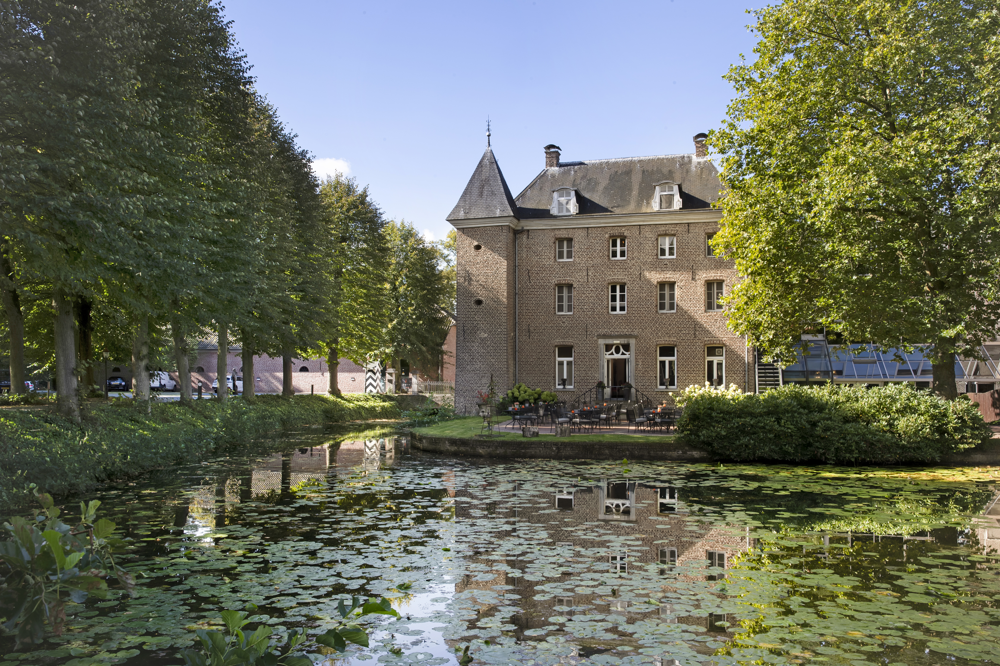
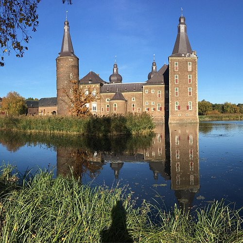
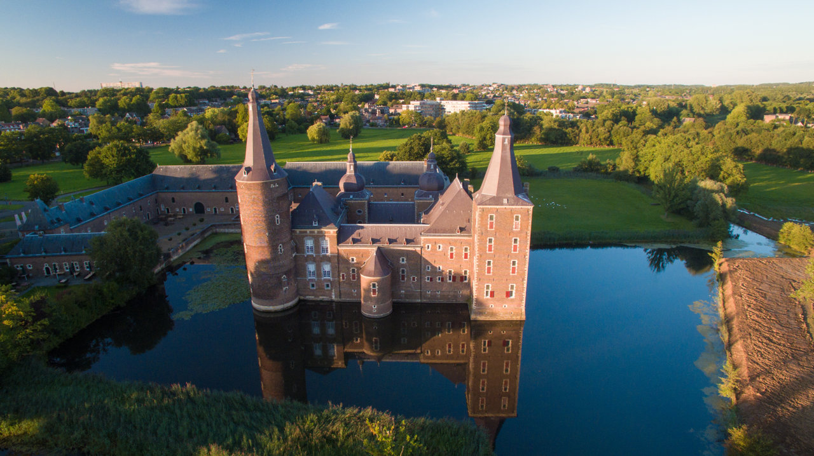
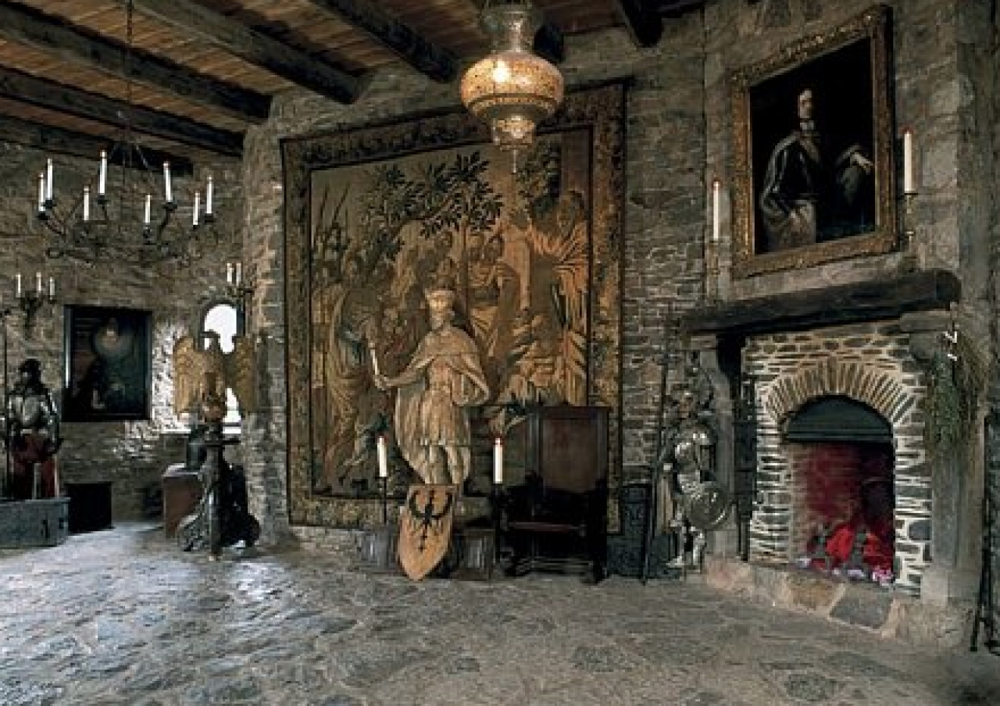

In onze gallerij
Meer kastelen in Luxemburg






De Burcht Reinhardstein, ook wel Burg Metternich genoemd, ligt in de Ardennen, bij het Luikse plaatsje Ovifat, aan het riviertje de Warche, vlak bij het punt waar dit het stuwmeer van Robertville verlaat. Reinhardstein is de hoogst gelegen burcht van heel België. Vlak bij de burcht stort de waterval van Reinhardstein zich in de Warche. Met zijn 60 meter verval is hij meteen ook de hoogste van het land. Kasteel Karlstein is een veertiende-eeuws gotisch kasteel in Karlštejn in Tsjechië, zo'n 35 kilometer ten zuidwesten van Praag. Het kasteel is gelegen op een driehonderd meter hoge karstheuvel, de Kněží Hora.
Karlstein is vernoemd naar de stichter van het kasteel, Karel IV van het Heilig Roomse Rijk. Karlstein kwam grotendeels tot stand in de periode 1348-1365. In een van de kapellen bracht de keizer in deze periode verschillende belangrijke relikwieën en kroonjuwelen onder. Karlstein doorstond in 1422 een beleg van de Hussieten en in de zestiende eeuw werd het deels herbouwd in renaissancestijl. In de negentiende eeuw vonden diverse restauraties plaats die het kasteel terug naar de gotiek brachten, al kon de restauratie die tussen 1887-1897 was uitgevoerd wel rekenen op de nodige negatieve kritiek. In de context van Luxemburg, de burcht reinhardstein, ook wel burg metternich genoemd, ligt in de ardennen, bij het luikse plaatsje ovifat, aan het riviertje de warche, vlak bij het punt waar dit het stuwmeer van robertville verlaat.
reinhardstein is de hoogst gelegen burcht van heel belgië. In de context van Luxemburg, een hoogteburcht is een op een natuurlijke hoogte gebouwde burcht. de naam is afgeleid van de indeling van kastelen door hun topografische positie. met deze indeling onderscheidt men hoogteburchten en laaglandkastelen. hoogteburchten kunnen op basis van de hoogte nog verder worden onderverdeeld. burchten op de top burchten op een bergkam burchten op een helling burchten op een uitstekende lagere top van een berg als ze in de 10e en 11e eeuw hun zuivere defensieve karakter verliezen en in toenemende mate versterkte adellijke woonburchten worden, krijgen burchten op een heuvel de voorkeur vanwege hun betere mogelijkheden om zich te verdedigen.
De provincie Luxemburg biedt naast het bezoek aan Kasteel reinhardstein nog vele andere interessante activiteiten en bezienswaardigheden die uw bezoek compleet maken.
Verken een van Europa's oudste burchten
Ontdek de meanderende rivier en bossen
Proef het beroemde Trappistenbier
Spot wilde dieren in hun natuurlijke habitat
Adres: Luxemburg, België
Meer kastelen in Luxemburg



Meer kastelen in Luxemburg